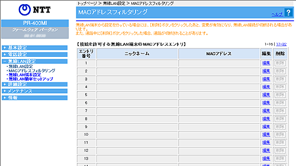

| 本商品に、無線のMAC アドレスフィルタリングの設定をします。 本商品では、［接続を許可する無線LAN端末のMACアドレスエントリ］のパターンを最大32個設定できます。 本画面は、本商品に専用無線LAN カード（SC-40NE/SC-40NE「2」）が装着されているときに表示されます。 設定値を選択・入力したあとに［設定］をクリックすると設定内容が反映されます。 |
||
＜お知らせ＞
|
||
| ■MACアドレスフィルタリング | ||
| ※「Web設定」画面に表示されているボタンについての説明は こちら | ||
|  | ||
|
| ［接続を許可する無線LAN端末のMACアドレスエントリ］の中から編集したいエントリ番号行末の ［編集］をクリックする 「MACアドレスフィルタリング エントリ編集」の画面が表示されます。 |
| ［接続を許可する無線LAN端末のMACアドレスエントリ］の中から削除したいエントリ番号行末の ［削除］をクリックする |
本商品では、接続を許可する無線LAN 端末のMACアドレスを設定できます。
※ 複数の接続を許可する無線LAN 端末のMAC アドレスエントリを編 集する場合には、 下記の1〜2を繰り返してください。
| 1. 下記を参考にして、各項目の設定を選択・入力する |
||
 入力方法
（初期値：MACアドレス指定） 入力方法
（初期値：MACアドレス指定） |
||
|
||
| ニックネーム |
||
| 「入力方法」で「ニックネームで選択」を選択した場合に選択します。 「無線LAN 設定」-「無線LAN 端末設定」で設定したニックネームから選択できます。 無線LAN端末設定の登録がない場合は選択できません。 |
||
| MACアドレス |
||
| 「入力方法」で「MACアドレスで選択」を選択した場合は、「MACアドレス」のプルダウンメニューから選択します。 接続中の無線LAN端末のMACアドレスが表示されます。接続中の無線LAN端末がない場合は選択できません。 |
||
| 「入力方法」で「MACアドレス指定」を選択した場合は、「MACアドレス」を入力します。 「MACアドレス」は、半角の0〜9、a〜f、A〜F、:（コロン）が使用できます。 ※ MACアドレスは、2文字ずつコロンで区切って入力してください。 例）MACアドレスが'xx-xx-xx-xx-xx-xx'の場合は、「xx:xx:xx:xx:xx:xx」と入力します。 ※ 重複したMACアドレスは登録できません。 |
||
| 2. ［設定］をクリックする |
||